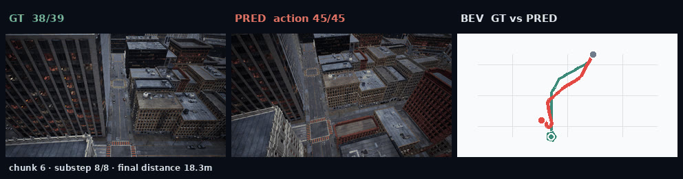

Aerial vision-language navigation · First author
X-Fly
Learning to reach and stop in full-chunk aerial navigation. The policy generates eight controls per decision, then learns to recover from drift and stop at the right moment with Recovery DAgger and Flow-GRPO.
- Seen success
- 74.18%
- Unseen success
- 51.73%
- Inference per waypoint
- 42 ms
